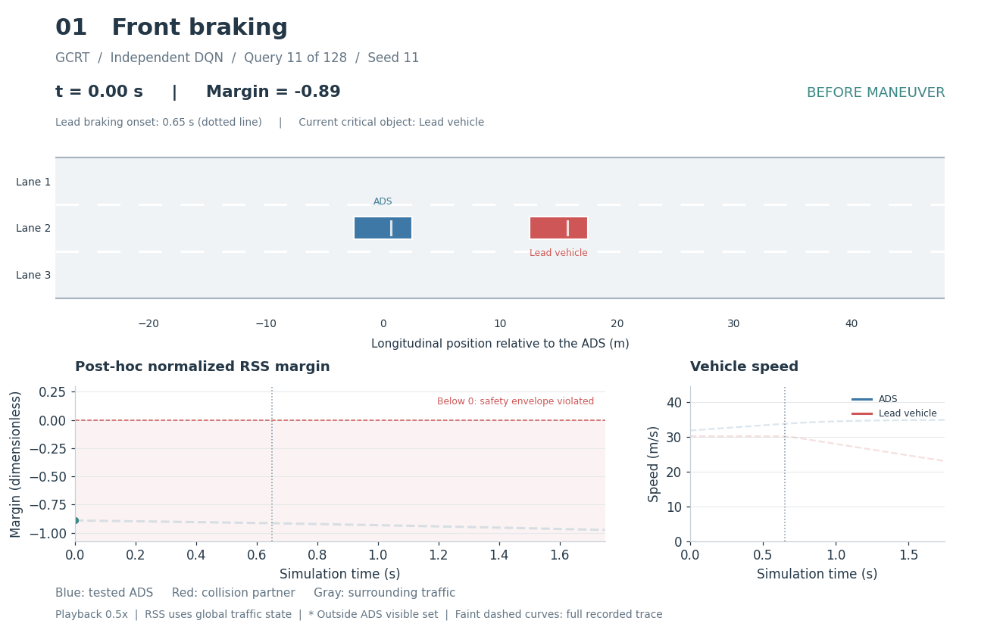
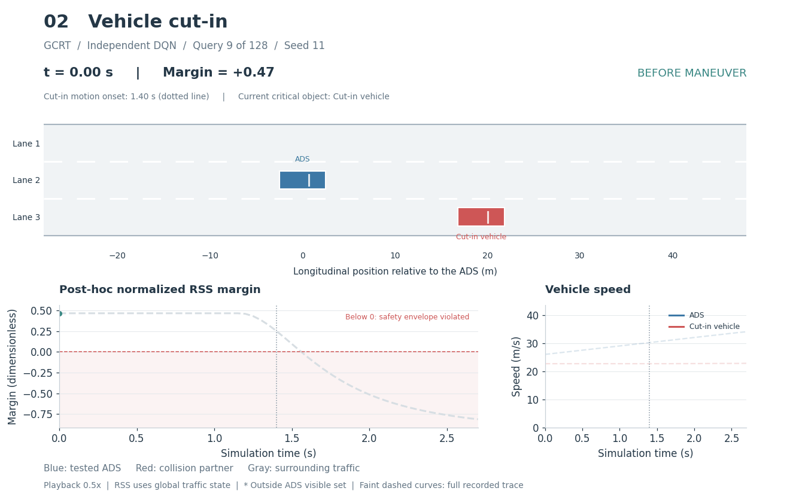
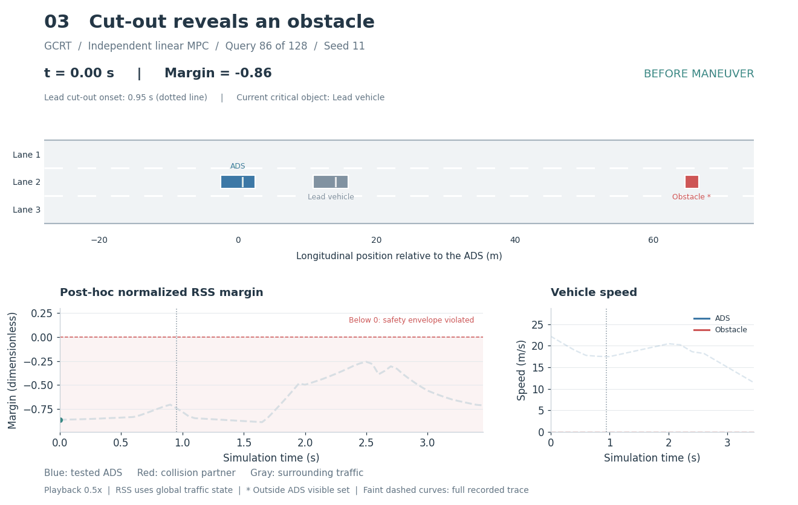
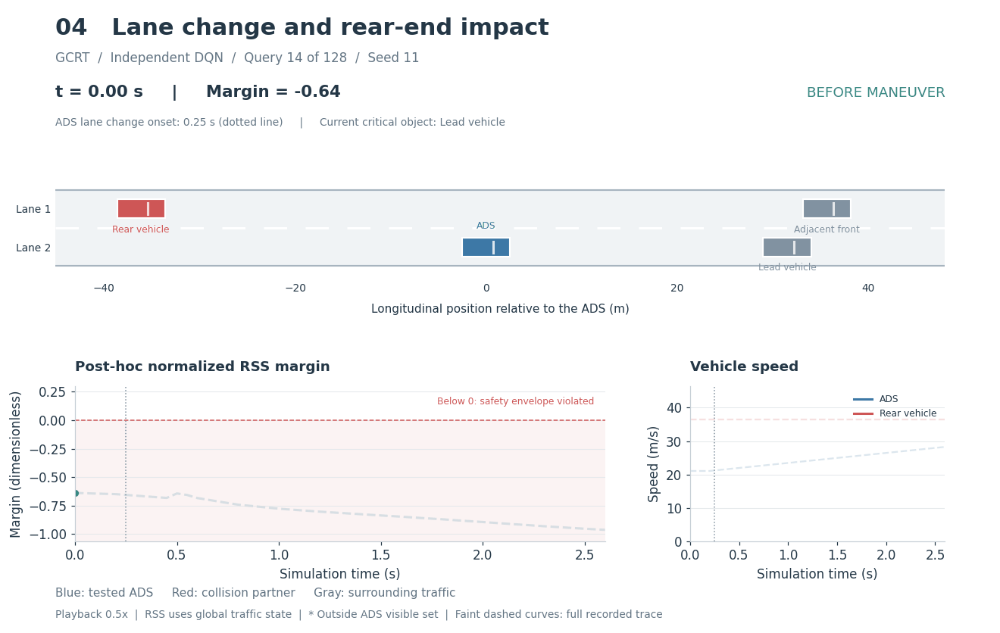
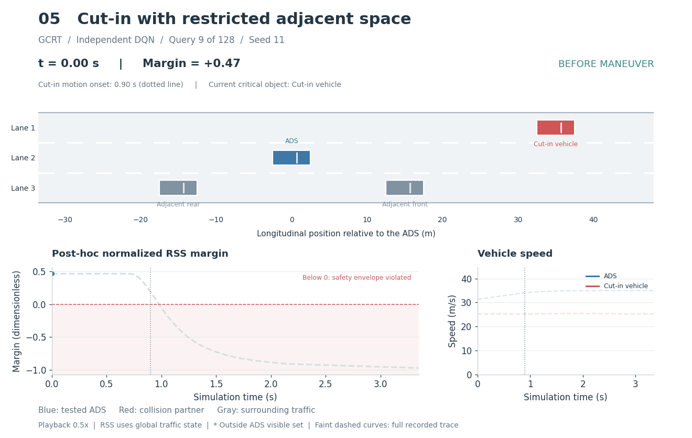

Front braking
independent_dqn · Query 11/128 · front contact

Five mechanism-specific examples from paid queries on independent ADS. Seed 11; 0.5x playback. The RSS margin is a post-hoc analysis, not the score used in the original search. * marks an actor outside the ADS visible set. Provenance and parameters
independent_dqn · Query 11/128 · front contact

independent_dqn · Query 9/128 · side contact

independent_linear_mpc · Query 86/128 · front contact

independent_dqn · Query 14/128 · rear contact

independent_dqn · Query 9/128 · front contact
